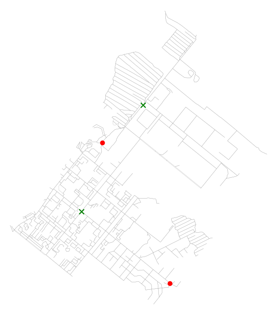
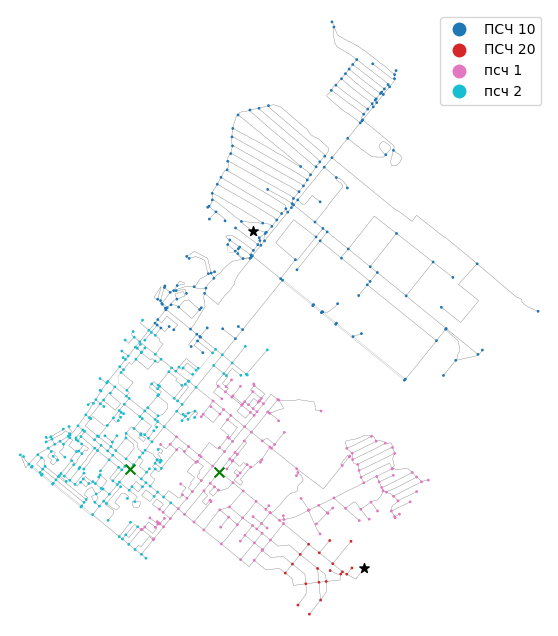
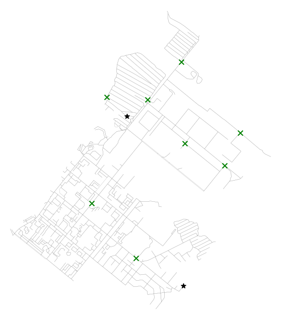

Ниже приведен ряд максимально быстрого и простого использования библиотеки genesis.
Прим.
Целевыми объектами являются узлы графа улично-дорожной сети. Примеры расчета для зданий рассмотрены в основных разделах документации.
2.1 Расчет оптимальной дислокации одной ПСЧ (BLP)
Расчет осуществляется с использованием алгоритма обезьяньего поиска (MSA). Целевой функцией является среднее время прибытия пожарного подразделения в любую точку графа улично-дорожной сети. Используется стандартный скоростной режим (DEFAULT_SPEEDS = [49, 37, 26, 16, 5] км/ч).
Наиболее выгодные точки размещения:
osmid
1577701962 POINT (93.33572 56.12016)
2034401362 POINT (93.35268 56.13656)
Name: geometry, dtype: geometry
Среднее время следования в любую точку города: 3.405565075116444 мин

С учетом существующих ПСЧ
Использован подход тот же что выше, но добавлено произвольное размещение имеющихся ПСЧ.
import osmnx as oximport pandas as pdfrom genesis.metrics import ArrivalTimefrom genesis.states import FirstArrivalUnitStatefrom graphs.speeds import kmh_to_mm, set_graph_travel_timesfrom fire_units.settings import DEFAULT_SPEEDSfrom genesis.mclp import BestNodesGAfrom genesis.point_selectors import RandomNodesSelector# Подготовка исходных данных## Загрузка ГДСG = ox.graph_from_place( query ='Сосновоборск, Красноярский край, Россия', simplify =False, network_type ='drive_service')## Установка скоростного режимаset_graph_travel_times(G, DEFAULT_SPEEDS, kmh_to_mm)## Упрощаем граф для ускорения расчетаG = ox.simplify_graph(G)## Создание стартового (произвольного) размещения ПСЧnodes =list(G.nodes())start_nodes = { nodes[10]: 'псч 1', nodes[20]: 'псч 2',}## Создание размещения существующих подразделений (условно)existing_nodes = { nodes[200]: 'ПСЧ 10', nodes[400]: 'ПСЧ 20',}# Подготовка алгоритмов расчета## Использование Генетического алгоритмаmclp = BestNodesGA( state_function = FirstArrivalUnitState(), metric_function = ArrivalTime(), node_selector = RandomNodesSelector(), mutation_max_count =2, population_size =50, elite_size =15, epoch_end_function =lambda epoch, best_metric, **kwargs: print(epoch, best_metric, ' '*5, end='\r'),)print('')# Проведение расчета## Расчет лучшего размещенияbest_nodes, best_metric = mclp( env = G, dynamic_nodes = start_nodes, static_nodes = existing_nodes)# Печать результатаnodes_gdf = ox.graph_to_gdfs(G, edges=False)print('Наиболее выгодные точки размещения:')print(nodes_gdf.loc[best_nodes.keys()].geometry)print('Среднее время следования в любую точку города:', best_metric, 'мин')# Визуализация ГДС с оптимальной точкой размещения## Расчет времени для существующих подразделений и точек размещенияtimes, nearest = FirstArrivalUnitState()(G, {**best_nodes, **existing_nodes})## Объединение датафрейма вершин ГДС и ближайшего к ним подразделенияnodes_gdf = pd.merge(nodes_gdf, nearest, left_index=True, right_index=True)## Печать картыfig, ax = ox.plot_graph(G, node_size=0, edge_linewidth=0.2, show=False, close=False, bgcolor='white')nodes_gdf.plot(ax=ax, column='nearest', legend=True, markersize=1)nodes_gdf.loc[existing_nodes.keys()].plot(ax=ax, color='k', marker='*', markersize=50)nodes_gdf.loc[best_nodes.keys()].plot(ax=ax, color='g', marker='x', markersize=50);
Наиболее выгодные точки размещения:
osmid
426923846 POINT (93.33099 56.1169)
426923850 POINT (93.34331 56.11672)
Name: geometry, dtype: geometry
Среднее время следования в любую точку города: 3.088321685207403 мин

Важно
Генетический алгоритм (GA) в чистом виде не подходит для решения задачи размещения одной ПСЧ, т.к. в таком случае он вырождается в случайный поиск, что влечет неоправданное увеличение временных затрат и не гарантирует нахождение точного решения.
Для такой постановки задачи лучше использовать другие алгоритмы MCLP:
Более подробно, см. в соответствующих разделах руководства.
2.3 Расчет оптимальной дислокации и требуемого количества ПСЧ (LSCP)
Используется алгоритм жадного добавления (ADD), соответствующий Методике определения числа и мест дислокации подразделений пожарной охраны изложенной в п. 4 [1].
Прим.
В данном случае для наглядности, с учетом небольшого ГДС, взят ИП-5 (индекс прикрытия для 5-ти минутной зоны).
При проведении реальных расчетов следует использовать ИП-10 или ИП-20 для расчета в соответствии со статьей 76 [2], или матрицу прибытия полученную с учетом максимально допустимых расстояний от объекта предполагаемого пожара до ближайшего пожарного депо в соответствии с п. 5 [1].
import osmnx as oximport pandas as pdimport numpy as npfrom genesis.metrics import ArrivalTime, CoverIndexfrom genesis.lscp import LSCP_ADDfrom genesis.states import FirstArrivalUnitState, ArrivalTimeMatrixState, get_atmfrom graphs.speeds import kmh_to_mm, set_graph_travel_timesfrom fire_units.settings import DEFAULT_SPEEDS# Подготовка исходных данных## Загрузка ГДСG = ox.graph_from_place( query ='Сосновоборск, Красноярский край, Россия', simplify =False, network_type ='drive_service')## Установка скоростного режимаset_graph_travel_times(G, DEFAULT_SPEEDS, kmh_to_mm)## Упрощаем граф для ускорения расчетаG = ox.simplify_graph(G)## Создание размещения существующих подразделений (условно)nodes =list(G.nodes())existing_nodes = { nodes[200]: 'ПСЧ 10', nodes[400]: 'ПСЧ 20',}# Подготовка алгоритмов расчета## Расчет матрицы прибытияg_nodes = ox.graph_to_gdfs(G, edges=False)g_nodes['node'] = g_nodes.indexmatrix = get_atm(G, g_nodes)## Использование Алгоритма жадного добавления для ИП-5add = LSCP_ADD( state_function = ArrivalTimeMatrixState(matrix), matrix = matrix, metric_function = CoverIndex(5), ip_val =5, )# Проведение расчета## Расчет лучшего размещенияbest_nodes, best_metric = add( env = G, static_nodes = existing_nodes)# Печать результатаnodes_gdf = ox.graph_to_gdfs(G, edges=False)print('Наиболее выгодные точки размещения:')print(nodes_gdf.loc[best_nodes.keys()].geometry)print('ИП-5:', best_metric, '%')## Расчет времени прибытия для существующих подразделений и полученных точек размещенияtimes, nearest = FirstArrivalUnitState()(G, {**best_nodes, **existing_nodes})print('Среднее время следования в любую точку города:', round(ArrivalTime()(times),1), 'мин')print('Максимальное время следования в любую точку города:', round(ArrivalTime(np.max)(times),1), 'мин')# Визуализация ГДС с оптимальными точками размещения## Печать картыfig, ax = ox.plot_graph(G, node_size=0, edge_linewidth=0.2, show=False, close=False, bgcolor='white')nodes_gdf.loc[existing_nodes.keys()].plot(ax=ax, color='k', marker='*', markersize=50)nodes_gdf.loc[best_nodes.keys()].plot(ax=ax, color='g', marker='x', markersize=50);
|########################################| 100.0%
Наиболее выгодные точки размещения:
osmid
1550088187 POINT (93.3382 56.12186)
2586140453 POINT (93.35024 56.11359)
2034401236 POINT (93.3744 56.12766)
2034401406 POINT (93.35346 56.13761)
2034401426 POINT (93.34232 56.138)
4116037089 POINT (93.37865 56.13262)
2034401612 POINT (93.36262 56.14339)
4116025706 POINT (93.36358 56.13101)
Name: geometry, dtype: geometry
ИП-5: 100.0 %
Среднее время следования в любую точку города: 2.8 мин
Максимальное время следования в любую точку города: 5.0 мин

1.
СП 11.13130.2009. Свод правил. Места дислокации подразделений пожарной охраны. Порядок и методика определения. 2009.
2.
Федеральный закон от 22.07.2008 N 123-ФЗ (ред. от 30.04.2021) Технический регламент о требованиях пожарной безопасности. 2008.